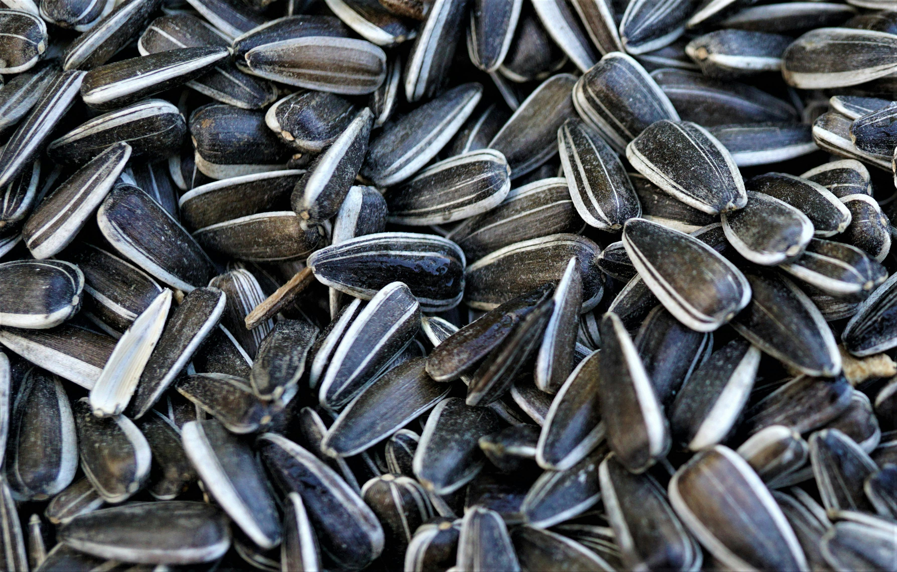

<Doctype html>
  <html lang="ko-KR">
    <!-- head: 사용자에게 보여지지 않지만 정보의 정의를 위한 공간 -->
  <head>
    <meta charset="utf-8">
    <!-- meta charset-인코딩 부분 먼저 작성 -->
    <meta name='viewport' content="width=device-width, initial-sacle=1.0">
    <!-- viewport-화면영역, 만약 가로 스크롤이면 세로값을 설정해주면된다 -->
    <meta name="title" content="아이엠 그라운드">
    <meta name="description" content="나의 첫 자기소개 페이지입니다.">
    <meta name="author" content="Kookmin Univ">
    <meta name="keywords" content="자기소개, 국민대, 경영대학원">
    <!-- 0323-2주차,og-open graph 소셜미디어에 보여지게하는 용도 -->
    <meta property="og:title" content="아이엠 그라운드">
    <meta property="og:description" content="나의 첫 자기소개 페이지입니다.">
    <meta property="og:image" content="https://images.pexels.com/photos/13024626/pexels-photo-13024626.jpeg?cs=srgb&dl=pexels-hicret-13024626.jpg&fm=jpg">
    <link href="./style.css" rel="stylesheet" type="text/css">
    <style>
      p {
        font-size: 20px;
      }
    </style>
    <script>
      //alert('이 컴퓨터는 해킹되었습니다.')
      //js에서 주석처리 할 때 쓰는 것이다.//
      
    </script>
  </head>
  <body>
    <h1>나의 자기소개 페이지</h1>
    <h2>Contents</h2>
      <h3>- 자기소개</h3>
      <h3>- 직업</h3>
      <h3>- 취미/특기</h3>
    <h2>자기소개</h2>
    <p>안녕하세요! 저는 디지털르마케팅 프로그래밍 강의를 듣는 인수지입니다.</p>
    <p>첫번째 문단</p>
    <p>두번째 문단</p>
    <p>세번째 문단</p>
    <p>
    첫번째 문단의 첫문장입니다. <br></br>
    <!-- <br> 은 엔터의 의미, 문단 나누는것과는 다름 -->
    첫번째 문단의 두번째문장입니다.
    </p>

    <!-- List items -->
    <h2>저녁 메뉴 후보군</h2>
    <ol type="I" start="13"> <!--type : 1(default), a,A,i,I,-->
      <li>엽기떡볶이</li>
      <li>피자</li>
      <li>김치볶음밥</li>
    </ol>
    <h2>좋아하는 동물</h2>
    <ul>
      <li>고양이</li>
      <li>햄스터</li>
      <li>강아지</li>
    </ul>

    <!--Anchor tag (등록하기, 버튼, 이미지),(target-default:self/blank)-->
    <a href="https://festa.io/events/4910">등록하기</a>
    <a href="https://festa.io/events/4910" target="_blank">등록하기</a>
     </br>
    

    <picture>
      <source srcset="./hamster.jpeg" media="(max-width:480px)"/>
      <source srcset="./seed.jpeg" media="(min-width:480px)"/>
      
    </picture>
    <video width="360" height="640" controls="controls">
      <source src="hamster eating.mp4" type="video/mp4" />
    </video>
  </body>
  </html>